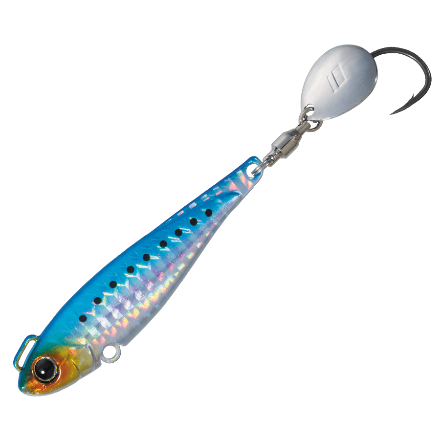
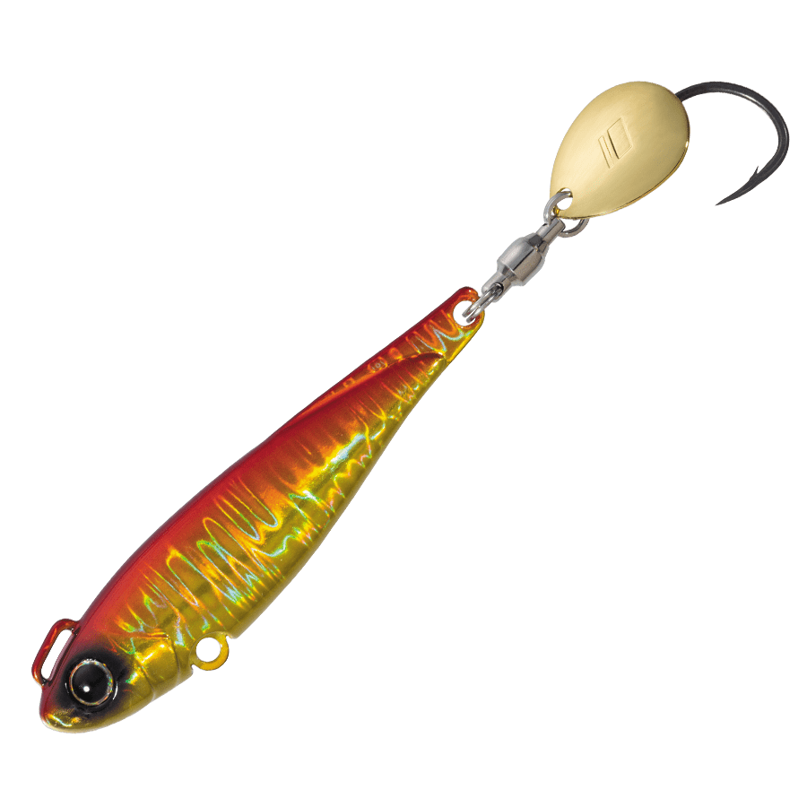
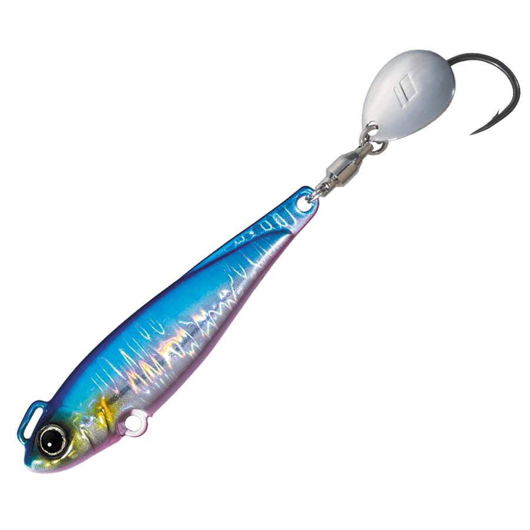
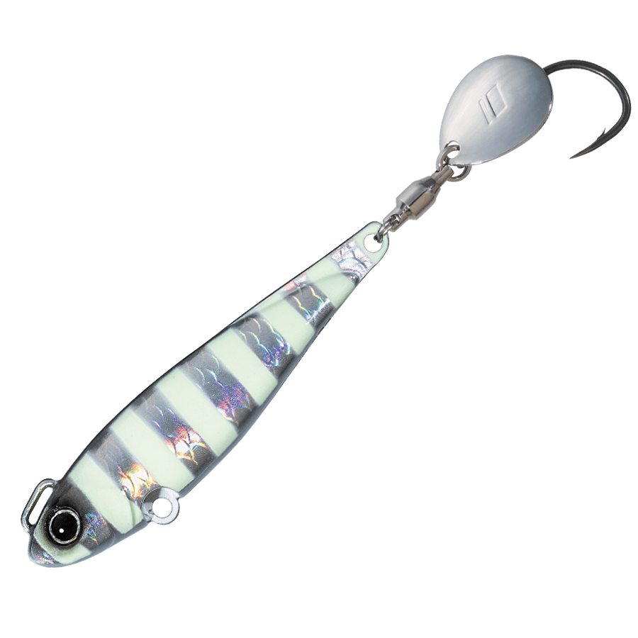
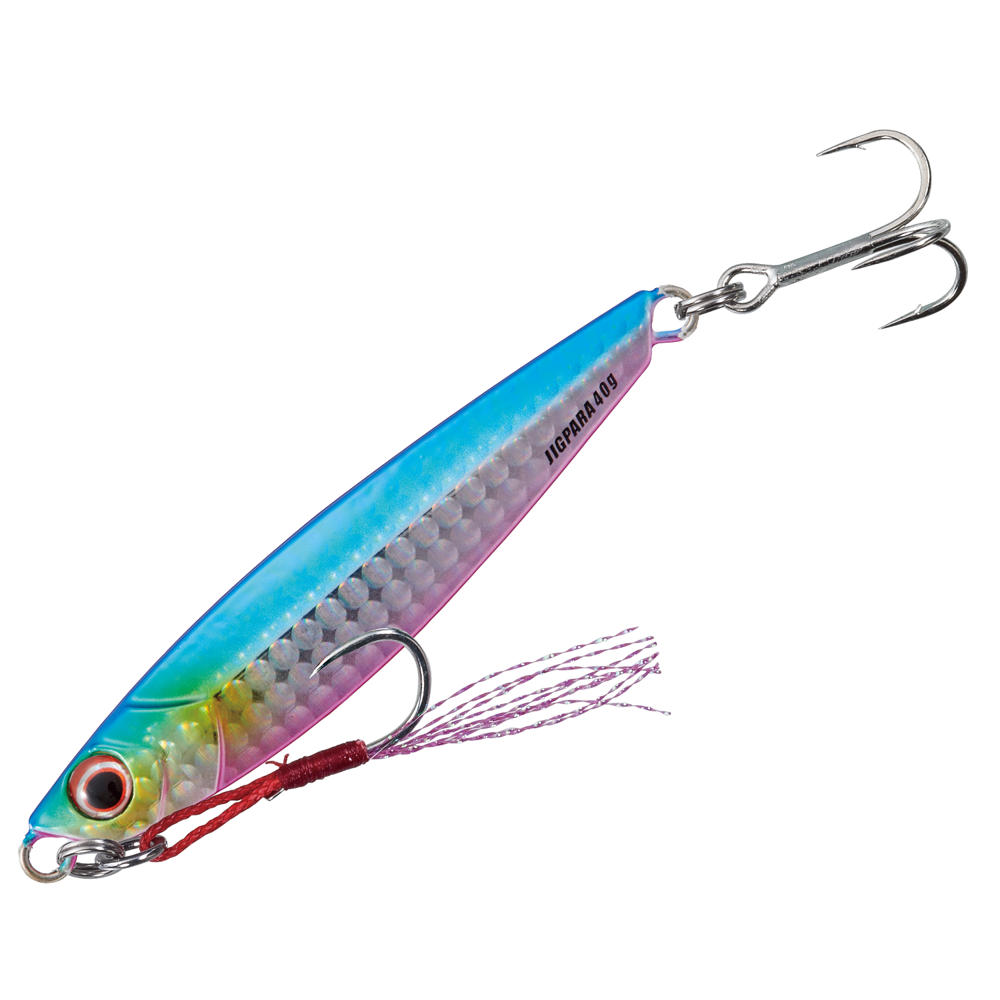

ジャイアントキリング ボンバースピン
（ブレード付きメタルジグ）
ジャイアントキリング ボンバースピンはMajor Craft（メジャークラフト）のブレード付きメタルジグです。
「超スピード巻きでもブレない実釣主義のサワラジグ」がコンセプト。キールの役割をするリアプレートで高速巻きでも直進性が安定し、ブレードの動きを邪魔しないのが最大の魅力です。20gから100gまで手頃な価格でそろうので、ロストを気にせず投げ倒せます。

画像出典:メジャークラフト公式HP
スペック
- メーカー
- Major Craft（メジャークラフト）
- タイプ
- ブレード付きメタルジグ
- ウエイト
- 20g／30g／40g／60g／80g／100g
- フック
- フッ素コート「簡単ブレードフック」搭載
- ターゲット
- サワラ・サゴシ・青物
- 価格
- 748円〜1,155円（税込）
▼今すぐチェック

ジャイアントキリング ボンバースピンの特徴
超スピード巻きでもブレない、サワラを狙い撃つための実釣主義ブレードジグ
-
キールの役割をするリアプレートで高速巻きでも安定
速巻きでのブレを抑えるリアプレートが、キールのように働いて直進性を安定させる。サワラ狙いで欠かせない高速巻きでも姿勢が崩れにくく、ブレードの動きを邪魔しない。
-
フロントアイで飛距離と沈下スピードを確保
フロントアイがキャスト時・フォール時の姿勢を安定させ、飛距離と沈下スピードに大きく貢献する。無駄な動きを抑えることで、ラインやフックの絡みなどのトラブルも減らせる。
-
刺さり抜群のフッ素コート「簡単ブレードフック」
フッ素コートを採用した「簡単ブレードフック」を搭載。刺さりの良さでショートバイトも拾いやすく、ブレードのフラッシングで寄せた魚を確実に掛けにいける。
ジャイアントキリング ボンバースピンの使い方
基本はキャストして狙いのレンジまで沈め、高速のただ巻きで探る。リアプレートの効果で超スピード巻きでもブレにくいので、サワラやサゴシの反応が良い速巻きを続けやすい。
ナブラが出たら、群れの先に投げて速巻きで通すのが基本。反応がない時は巻きスピードを変えたり、着底からの巻き上げで縦に探ったりして、魚のいるレンジを探っていきます。
ジャイアントキリング ボンバースピンの得意な状況
堤防やサーフからサワラ・サゴシを狙う状況が最大の出番。
高速巻きで反応する青物の回遊時や、ナブラ打ちで速く確実に通したい場面で選びたい1本です。
ワンポイント
サワラやサゴシは歯が鋭いので、リーダーを切られる「サワラカッター」に注意。メーカーからはサワラ専用のワイヤーアシストフックやゲキサス サワラ専用もラインナップされているので、組み合わせると安心です。
手頃な価格なので、ウエイト違いを複数持っておき、潮の速さや水深に合わせて使い分けましょう。
ボンバースピンのウエイトの使い分け
| ウエイト | 価格（税込） | 得意な場面 |
|---|---|---|
| 20g | 748円 | ライトタックル・浅場のサゴシや小型青物 |
| 30g | 803円 | 堤防・サーフの基準ウエイト |
| 40g | 858円 | 飛距離が欲しいサーフや水深のある堤防 |
| 60g | 924円 | 潮の速いエリア・遠くのナブラ |
| 80g | 1,034円 | 深場・強い潮流での青物狙い |
| 100g | 1,155円 | ショアジギングタックルでの遠投・深場 |
ボンバースピンは20g〜100gの6ウエイト展開。使うロッドの強さと水深・潮の速さに合わせて、ボトムが取れる範囲でウエイトを選ぶのが基本だ。
オススメカラー
ボンバースピンは全11色展開。オススメのカラーを厳選して紹介します。

#01 イワシ（ケイムラ）イワシパターンの基準カラー。ケイムラ入りで、澄み潮でもナチュラルにアピールできる。

#03 レッドゴールド（ケイムラ）濁りやローライトに強いアカキン系。朝夕マズメや濁った日に。

#10 ブルーピンク（ケイムラ）青物狙いの定番ブルピン。迷ったらまず投げたい1色。

#9 ゼブラグローゼブラ柄のグローカラー。夕マズメから夜のサワラ・タチウオ狙いに。
画像出典:メジャークラフト公式HP
ジャイアントキリング ボンバースピンに似ているルアー
-
 ジャックアイマキマキ
ハヤブサ
詳細はこちら＞
ジャックアイマキマキ
ハヤブサ
詳細はこちら＞
ホロ貼りブレード付きのただ巻き専用ジグ。巻くだけでブレードのフラッシングで誘う使い方が、ボンバースピンと共通する。
-
 Zブレード
ジーク
詳細はこちら＞
Zブレード
ジーク
詳細はこちら＞
亜鉛合金ボディのブレードジグ。高速巻きならボンバースピン、ゆっくりしたフォールで見せたい時はZブレードと使い分けられる。
-

ジグパラショート メジャークラフト 詳細はこちら＞同じメジャークラフトの定番メタルジグ。ジャークで誘いたい時はジグパラ、ブレードで寄せたい時はボンバースピンと使い分けたい。